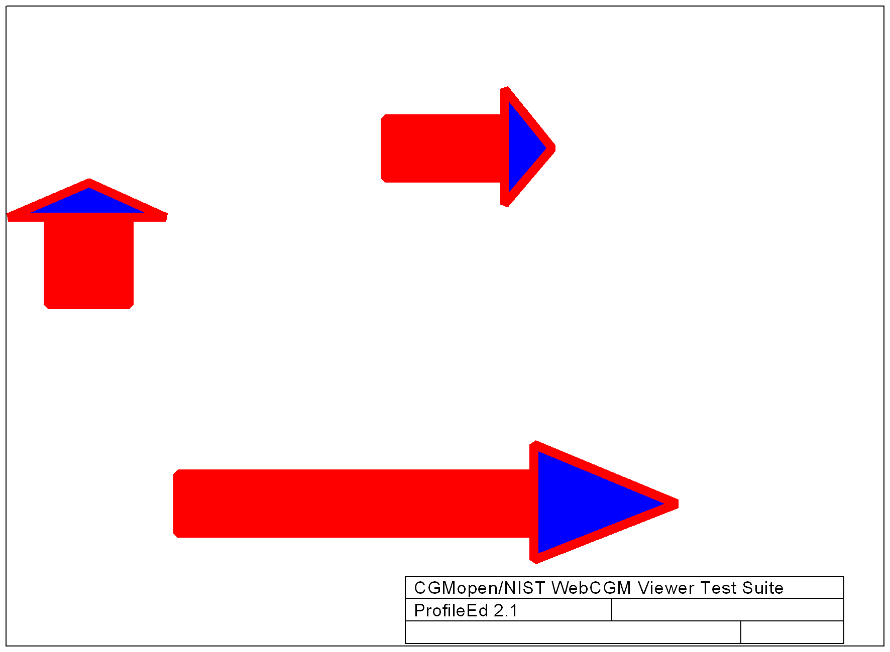

Transform XCF Test Page
Source image
Reference image

Test results
Test Number
Purpose
Test Result
Comments
Transform a CGM document using XCF:
NA
Should look like reference image
Reset initial styles
NA
CGM illustration should be back to initial look